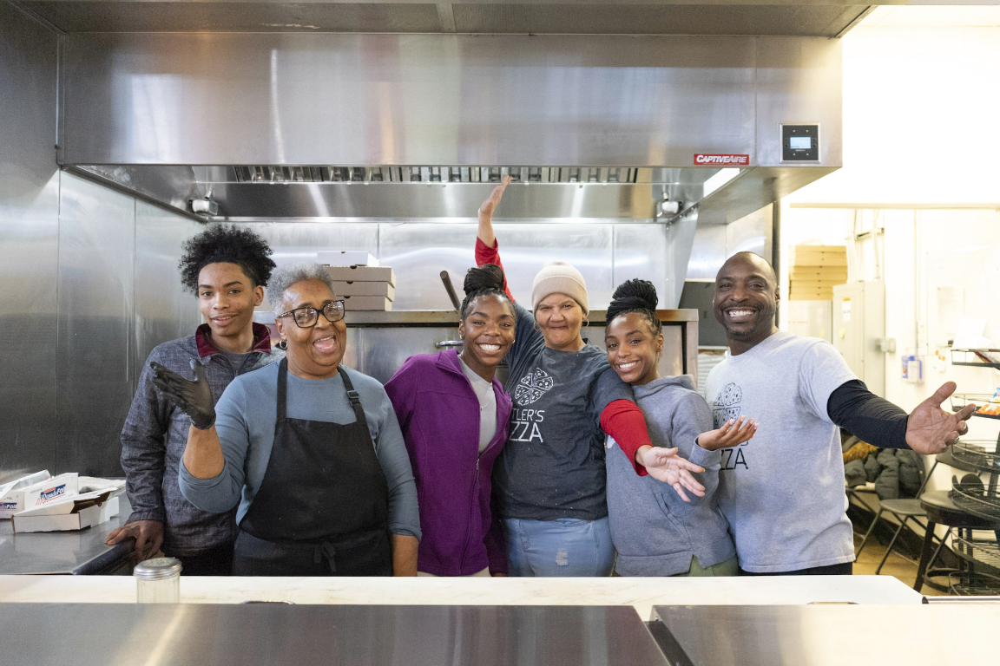
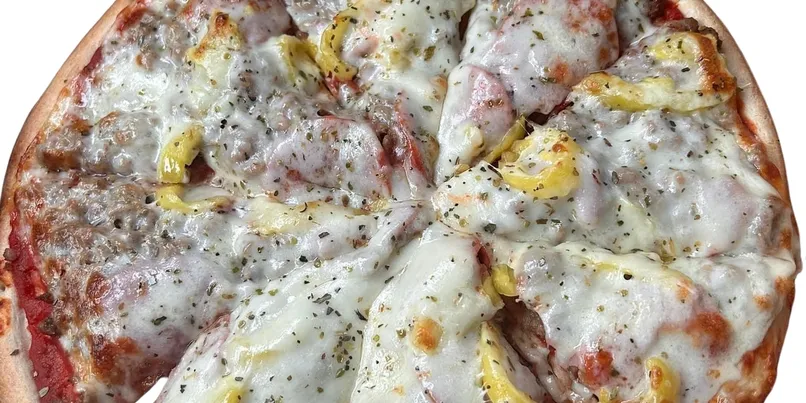
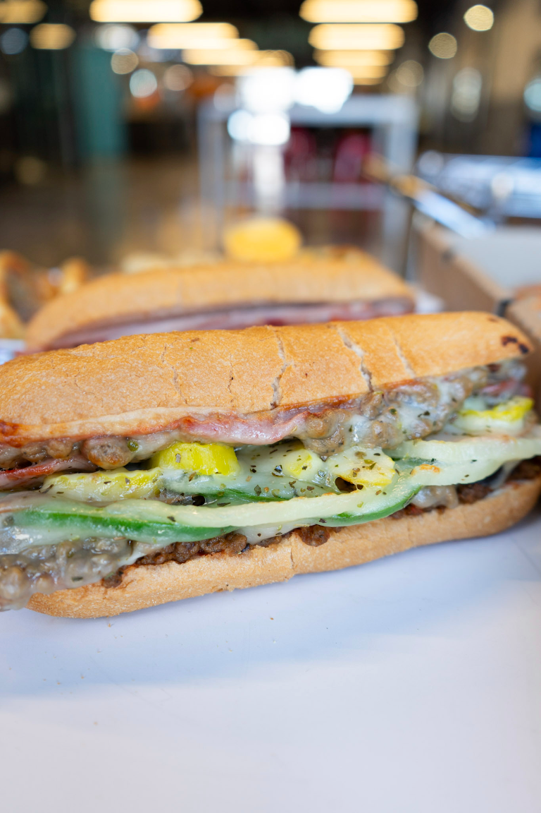
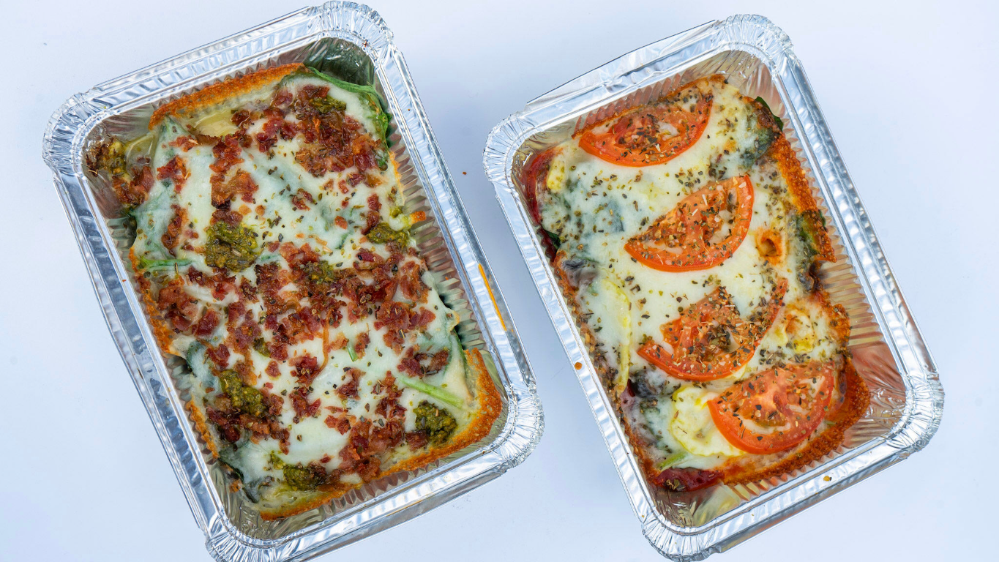
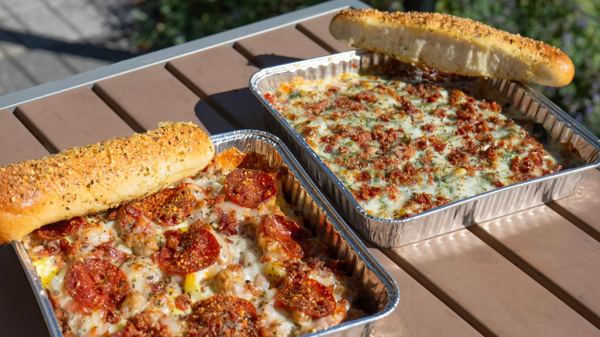
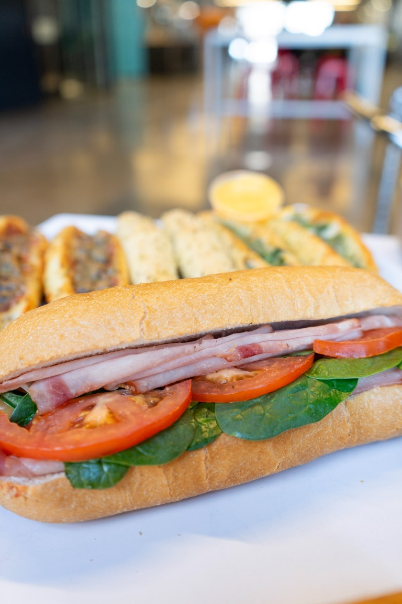
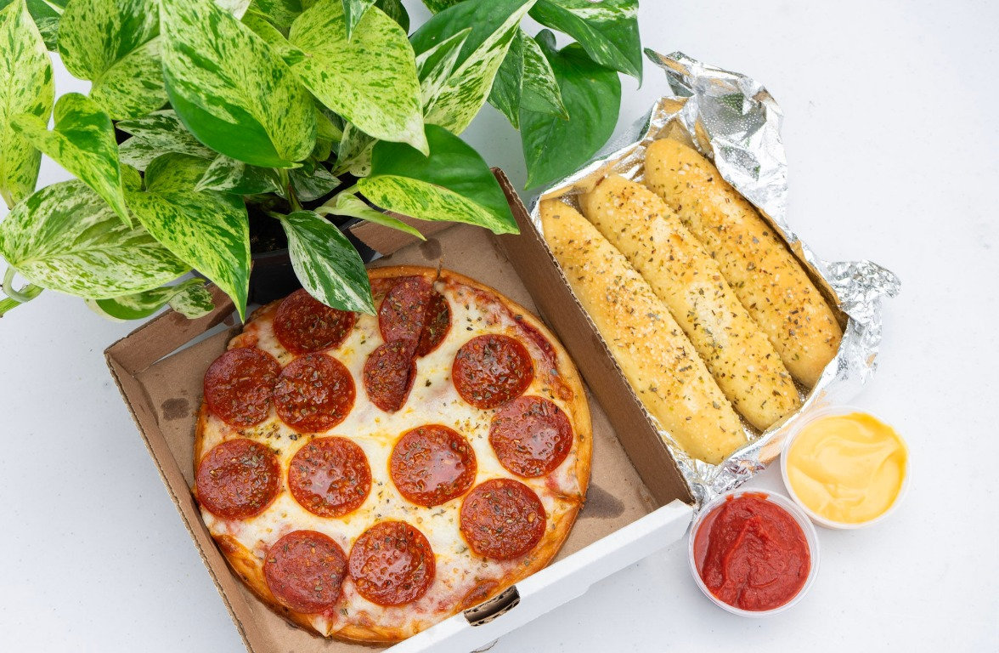
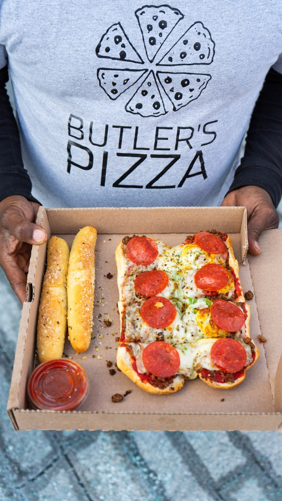

ABOUT BUTLER'S
My father started Butler's Pizza in 1990 as a family-run pizza restaurant, and we have proudly served the Indianapolis pizza community ever since. Over the years, we grew and opened three branches on the westside of Indianapolis. Today, we continue to honor his legacy by serving flatbread pizza made with love and care, and customers can easily order pizza online to enjoy our specialties.

FROM OUR KITCHEN
At our pizza restaurant, we offer a wide range of Indianapolis pizza, breadsticks, and sandwiches. All our ingredients are carefully selected to ensure the highest quality and authenticity, making it easy for you to order pizza online with confidence. Our talented cooks, Amanda, Paula, and Cantrell, are master pizza and sandwich makers at our Indianapolis pizza restaurant, boasting over 20 years of experience. Their passion for food and commitment to using only the freshest ingredients shine through in every pizza and sandwich they create. They are always eager to share their knowledge and expertise with customers looking to order pizza online.






